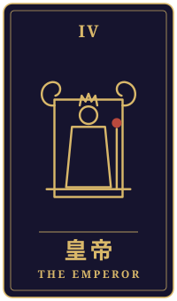

片羽
物語の手前に、ひとつの相談がありました。三枚のタロットをめぐるやりとりを、聞こえたままに書き留めています。
持ち込まれた相談
渋谷のビルで夜の管理の仕事をしています。ハロウィーンの夜、入口の前に立っていたら、仮装した大学生の娘が友だちと笑いながら目の前を通り過ぎていきました。「あの夜の渋谷には行くな」と何度も言ってきたのに。娘は私に気づかなかったと思います。今朝、家で顔を合わせても、娘は何も言いませんでした。叱るべきなのか、見なかったことにするべきなのか、わかりません。正直に言うと、腹が立つより、家では見たことのない顔で笑っていたのが寂しかったんです。若い頃の私も、親に黙ってあの街で遊んでいました。私はこのことを、娘に言うべきでしょうか。
タロットの読み解き

過去
皇帝・正位置
過去の位置に出た皇帝は、正位置で責任や安定を示すカードです。あなたがこれまで、家族を守る役割を静かに背負ってこられたことが映っているのかもしれませんね。夜の管理のお仕事も、その責任感と無関係ではないように感じます。

現在
恋人・逆位置
現在の位置には恋人の逆位置が出ています。このカードは、心の中で考えが定まらず、揺れている状態を表すことがあります。娘さんを心配する気持ちと、信じて見守りたい気持ちが、あなたの中でぶつかっているのではないでしょうか。叱るべきか見過ごすべきか迷うのは、その揺れがそのまま表れているからだと思います。
そして、腹立たしさよりも寂しさが先に来たというお話も、とても大切な手がかりです。寂しさは、娘さんとの距離が少し変わったことへの、正直な感情なのでしょう。

未来
女帝・逆位置
未来には女帝の逆位置が出ました。このカードは、愛情が行き過ぎて過保護になることや、流れが滞ることを示す場合があります。もし今、心配から強く止めようとすると、かえって娘さんが話しにくくなるという見方もできます。ただ、これは未来を決めるものではなく、「力を少し緩めてみてはどうか」という合図として受け取ってみてください。
最後に
全体を通して見ると、言うか言わないかより先に、ご自身の心配と寂しさを分けて眺めてみることが大切なのかもしれません。そのうえで、責めるための話ではなく、「あの夜を見かけて驚いた」「どんな時間を過ごしていたのか聞いてみたい」と、あなたの気持ちを伝える形なら、娘さんも耳を傾けやすくなるかもしれません。
若い頃のご自身の姿を思い出されたことも、きっと言葉を選ぶ助けになるでしょう。最後に決めるのは、娘さんをいちばんよく知るあなた自身です。
帰り際の問い与えることで、何を手放せずにいるのか。
読み解きは、タロット占い「月夜のアルカナ」が、この相談と引かれた三枚から返したものです。小説は同じ三枚を、別の角度から描いています。相談者は物語のための架空の人物です。相談文・読み解き・短編本文は、いずれも生成AIを使って制作しています。
物語に戻る